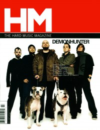
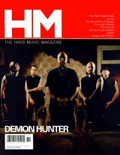
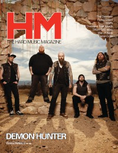

Demon Hunter
|  |
| July 2004 HM |
 |
| November 2007 HM |
 |
| April 2012 HM |
 |
| May 2019 Metalbreed |
Media coverage:
- Jul 2002 in HM "Poster: Demon Hunter"
- Jul 2004 in HM "Demon Hunter"
- Nov 2005 in HM "The Mystery of Triptych", by David Stagg
- Apr 2006 in Heaven's Metal "Metal Tracks: Demon Hunter", by Ryan Clark
- 2006 in Christian Rock Report "unmistakably DEMONHUNTER", by Rhonda Warden
- Sep 2007 in CCM "New Noise: Demon Hunter", by Andrew Schwab
- Nov 2007 in HM "Opening Up The Fiery Gates", by Steven Douglas Losey
- Nov 2007 in HM "Poster: Demon Hunter"
- Mar 2008 in CCM "Story Behind the Song: Carry Me Down", by Ryan Clark
- Jan 2009 in HM "Demon Hunter", by Andrew Schwab
- Jan 2010 in HM "Hardnews: Quick & Concise: Demon Hunter In Studio"
- Mar 2010 in HM "The Clock Is Ticking, There Is Still Work To Be Done", by Daniel Garcia
- Jul 2010 in HM "Live Report: The Powerless Rise Tour", by Jeff Cunningham
- Nov 2010 in HM "Street Team Report: Demon Hunter", by Jason Laughinghouse
- Jan 2011 in Heaven's Metal "Metal Tracks: Concert Review: The National, Richmond, VA", by Jeff McCormack
- Jan 2012 in HM "In Finite Live", by Doug Van Pelt
- Apr 2012 in HM "Demon Hunter: Focused", by Daniel Garcia
- May 2012 in CCM Digital "The Fringe: Demon Hunter", by Andy Argyrakis
- May 2013 in Relevant "Slices: Christian Rock was Used to Interrogate Terrorists"
- Mar 2014 in HM "Operating an an Evolutionary Leap, Demon Hunter is Taking Extreme Measures", by Justin Mabee
- Jun 2017 in Metalbreed "Latido Extremo: Demon Hunter", by Claudia Saavedra
- May 2019 in Metalbreed "Ryan Clark", by Claudia Saavedra
Albums & reviews:
2002: Demon Hunter
2009: Live In Nashville
2012: True Defiance
2014: The Extremist
2018: Peace
- Jan 2003 in HM, by Chad Olson
- May 2004 in Relevant, by Erica Gomez
- Jul 2004 in HM, by Chad Olson
- Sep 2004 in YouthWorker, by Dave Urbanski
- Oct 2005 in Heaven's Metal, by Doug Van Pelt
- Dec 2005 in CCM, by Doug Van Pelt
- Jan 2006 in HM, by Darren Tindell Jr.
- Jan 2007 in HM, by Chad Olson
- Nov 2007 in CCM, by Tony Shore
- Dec 2007 in Relevant, by John Brandon
- Jan 2008 in HM, by Chad Olson
- Dec 2008 in Heaven's Metal, by Michael J. Larson
- Jan 2009 in HM, by Chad Olson
2009: Live In Nashville
- May 2009 in HM, by Doug Van Pelt
- May 2010 in HM, by David Stagg
2012: True Defiance
- May 2012 in HM, by Chad Olson
- May 2012 in CCM Digital, by Matt Conner
- 2012 in Heaven's Metal, by Jeff McCormack
2014: The Extremist
- Apr 2014 in HM, by Collin Simula
- 1 May 2014 in CCM Digital, by Matt Conner
2018: Peace
- May 2019 in Metalbreed, by Johnny Gonzäles
- May 2019 in Metalbreed, by Johnny Gonzäles
Award Summary (Nominations / Wins)
Dove Awards- 2003 Dove Awards
- Hard Music Album: Demon Hunter
- Recorded Music Packaging: Storm the Gates of Hell [deluxe edition]
- Long Form Music Video: 45 Days
- Recorded Music Packaging: The World is a Thorn [deluxe edition]
- Rock Album: The World is a Thorn
- Recorded Music Packaging: True Defiance [deluxe Edition]
- Recorded Music Packaging: The Extremist
- Recorded Music Packaging: Outlive - Deluxe Edition
- Rock/Contemporary Album: Peace
- Rock/Contemporary Recorded Song: "More Than Bones"
- Rock/Contemporary Album: War
© 2011 CMnexus. Last updated April 2021. Contact: editor -AT- cmnexus -DØT- org About